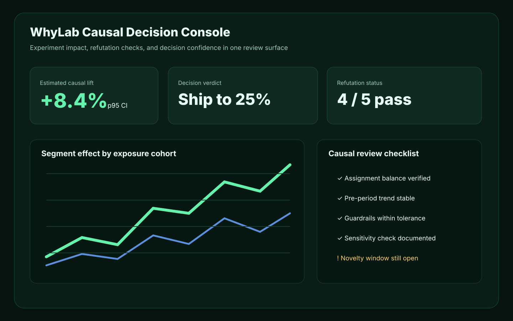
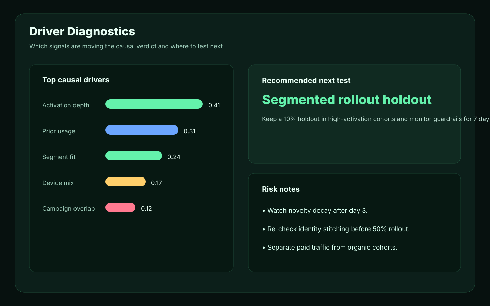

WhyLab is a causal inference platform for teams that need to separate correlation from causation.
Find the real cause with AutoML, Double ML, refutation, and multi-agent debate.
Causal inference platform
Three AI agents debate with evidence to deliver
the optimal verdict inside a practical causality lab: Rollout · A/B Test · Reject.


Scenario A: Credit Limit → Default Rate | ATE: -12.3% (p=0.0003)
How it works
From data upload to causal verdict,
a fully automated
end-to-end causal inference platform workflow.
Three AI agents debate with evidence to reach a final decision
Explores growth opportunities from causal analysis results. Captures opportunities with 10 evidence types.
10 evidence typesWarns about vulnerabilities and potential losses in causal models. Validates 8 attack vectors.
8 attack vectorsUse cases
Practical pages for teams searching for causal inference, experiment analytics, incrementality, pricing, retention, and product analytics workflows.